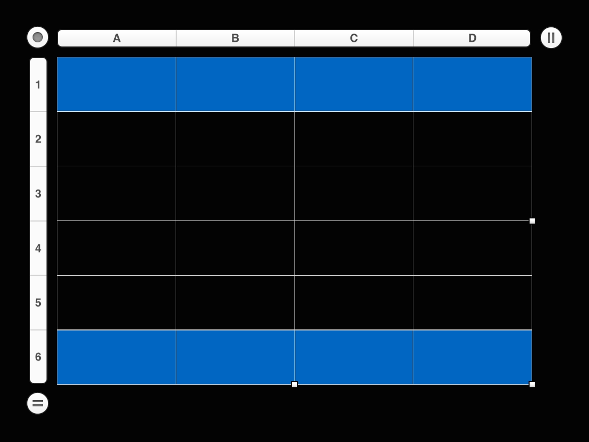

Tables are an important element of Keynote presentation, and their creation is a common task that scripts perform. All it takes is a basic understanding of the relationship between tables and slides.
Tables and Slides
Tables are elements of slides. When creating a table, the script must address the slide on which the table is to be created. Slides can be addressed using any of these methods:
- By slide index number, such as slide 5
- By using the document property current slide to target the currently displayed slide
- By slide object reference, possibly stored in a variable
Examples of addressing slides is shown in the script below:
IMPORTANT TIP: Learn how to save and run your favorite scripts using the system-wide Script Menu.
| Addressing a Table’s Parent Slide | ||
| 01 | tell application "Keynote" | |
| 02 | activate | |
| 03 | ||
| 04 | if not (exists document 1) then error number -128 | |
| 05 | ||
| 06 | tell document 1 | |
| 07 | ||
| 08 | -- addressing a slide by its index value | |
| 09 | tell slide 5 | |
| 10 | -- table making command goes here | |
| 11 | end tell | |
| 12 | ||
| 13 | -- addressing the currently displayed slide | |
| 14 | tell current slide | |
| 15 | -- table making command goes here | |
| 16 | end tell | |
| 17 | ||
| 18 | -- addressing a stored reference to a specific slide | |
| 19 | set thisSlide to make new slide | |
| 20 | tell thisSlide | |
| 21 | -- table making command goes here | |
| 22 | end tell | |
| 23 | end tell | |
| 24 | end tell | |
Many of the script examples in this section use the document property current slide as the means of targeting the slide the user is currently viewing.
Tables are created using the make verb from the Standard Suite of the Keynote scripting dictionary.
make v : Create a new object.
make
new class : The class of the new object.
[ at location specifier ] : The location at which to insert the object.
[ with data any ] : The initial contents of the object.
[ with properties record ] : The initial values for properties of the object.
⇒ specifier : The new object.
Since tables are an element of a slide, which in turn is an element of a document, the table creation statement containing the make verb (08) must reflect this hierarchy, by occurring within nested tell blocks addressing the parent slide (07-09) and its parent document (06-10).
Note the use of the document property current slide (07), the value of which, is the slide whose content is currently being displayed in the document. This generic property allows scripts to work correctly, regardless of which slide is currently displayed in the document window.
When the make verb is used (08), it will return a reference, to the newly created table, which can be stored in a variable (thisTable) for later use in the script.
To define the number of initial rows and columns for the created table, as well as any headers and footers, use the optional with properties parameter of the make verb. Simply follow the parameter with an AppleScript record containing colon-delimited pairings of the property names and their initial values (see 14-20).
In the script example below, the property values are stored within variables included in the parameter’s record. This optional technique is useful for passing values that are generated dynamically.
NOTE: the character ¬ (placed at the ends of lines) is used to indicate that the lines are part of a single script statement, which has been segmented and placed on separate lines, for the purpose of fitting within the width constrictions of this column.
You can change the values at the top of the script to create tables with different elements.
(⬇ see below ) A table created by the example script:
